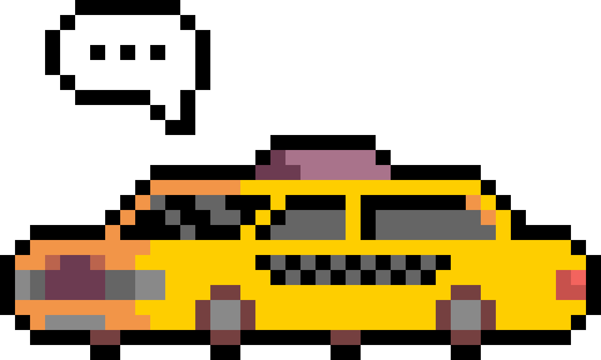

Developed and pitched a 40+ minute narrative-driven game about a driving a taxi.
Delegated tasks and scheduled meetings for a team of over 10 people, ensuring to meet deadlines.
Led a team with deliberate decisions and a unified vision to harbor an efficient development process.
Maintained accurate documentation of gameplay & narrative throughout development.
Iterated heavily using feedback from weekly playtests and advice from industry mentors.
What is drivetalk?
drivetalk is a narrative-driven game about a taxidriver's introspective journey through grief
presented through conversations with passengers.
Inspired by VA-11 Hall-A, What Remains of Edith Finch, and the anime OddTaxi
we aim to create an emotionally impactful game that leaves the player 'sitting in silence afterward' and reflecting on their own experiences.

Some say the taxi you drive, Bart, is the true main character.